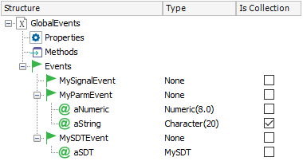

GlobalEvents is an external object, imported by default by GeneXus. It is intended to be changed by developers, allowing you to create Global Events in order to achieve a more flexible interaction between the components of a form, in Web and Smart Devices applications. That's why it is provided inside the GeneXus folder (under the KB's Root Module) insted of being distributed inside a built-in module.

Some objects can trigger global events, and some others can handle them. Event handlers can only be programmed in objects that have a UI (e.g. Web Panels, SD Panels, etc.) for both Web and Smart Devices applications in their Event section tab. On the other hand, you can trigger a global event from any of these:
- Web Panels and web Transactions,
- Panels for Smart Devices and WorkWithDevices objects, from user events (always) and from Start, Refresh and Load events in Offline applications only(1), and
- Offline Procedures and Business Components in Smart Devices applications(1).
Then, you can write a handler event as follows:
Event GlobalEvents.MyParmEvent(&aNumeric, &aString)
code_section
EndEvent
And there is another part of your application that triggers the global event:
code_section
GlobalEvent.MyParmEvent(1,&StringCollection)
code_section
- The GlobalEvents external object must not be renamed.
- The Properties and Methods of the GlobalEvents external object should not be edited.
- Every Event must have the IsStatic property set to True (newer GeneXus upgrades have this property already set by default and it is exposed as read-only).
- Return parameters are not allowed for any Event.
- In online Smart Devices apps, the global events must be triggered only from client-side (not from server-side events).
- To be able to trigger a global event from an offline procedure (in Smart Devices) the following properties must be set:
In the root node:
| iOS External Name property |
GXEOGlobalEvents |
| Android External Name property |
GlobalEvents |
| Android Package Name |
com.artech.android.api |
For each SD event:
| iOS External Name property |
EventName |
| Android External Name property |
EventName |
where "EventName" is the value of the Internal Name property of the event, written in lower case.
Knowledge Bases created with GeneXus 15 Upgrade 12 will have the root node properties already set.
| Generators |
SmartDevices(Android,iOS), Web(.NET, Java) |
| Connectivity |
Online, Offline |
This external object is available as of GeneXus 15.
- (1) Support for triggering global events from Offline procedures in Smart Devices applications is available as of GeneXus 15 upgrade 12.
|